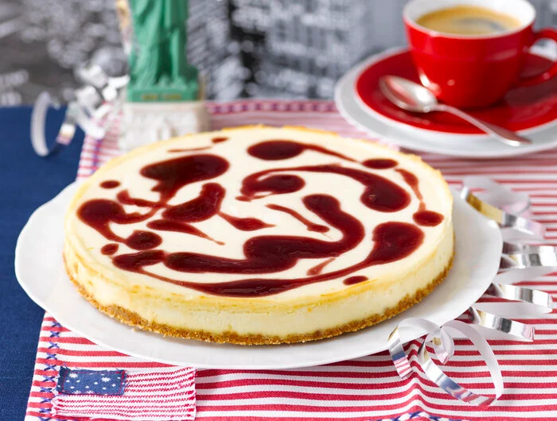

Der New York Cheesecake ist schnell und einfach zu machen. Aber das ist nicht allein der Grund, warum ihn die Amerikaner so lieben. Seine einzigartige Quarkcreme ist einfach ein Traum.
Zitrone heiß abspülen, trocken reiben und die Schale fein abreiben. Butterkekse grob zerbröckeln und in einer Küchenmaschine oder einem Mixer fein zermahlen. Butter bei schwacher Hitze in einem Topf schmelzen lassen. Topf vom Herd ziehen, Keksbrösel sowie 1⁄2 TL Zitronenschale zur Butter geben und gründlich einrühren. Alles mit den Händen oder den Knethaken des Handrührgeräts gleichmäßig krümelig durcharbeiten.